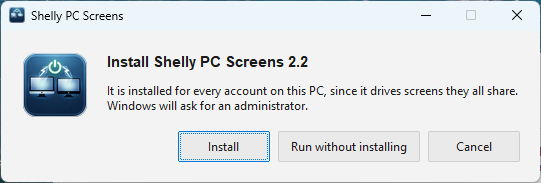
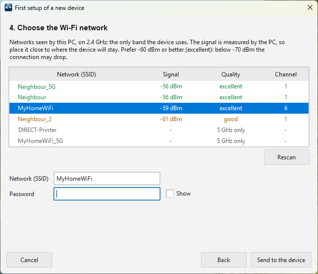
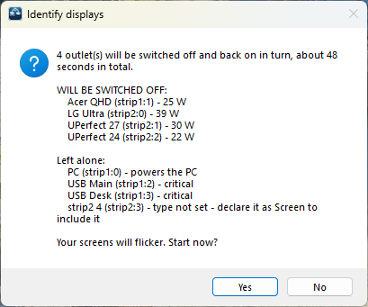
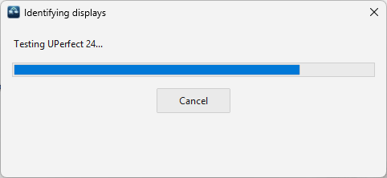

Setup guide
From the box to your first profile.
Eight steps, about fifteen minutes plus a calibration you let run while you use the PC. Every step is done once.
Before you start
- One or more Shelly Power Strip 4 Gen4, the device the app is validated on.
- Your home Wi-Fi in 2.4 GHz: the power strips have no 5 GHz radio.
- A Windows PC (64-bit) and an administrator's password, once, for the installation.
- Screens powered by their own power cord. A screen powered by the PC's USB-C cannot be cut by an outlet.
1Wire it
Spread the PC tower, the screens and the USB hubs across the power strips, and plug each power strip directly into the wall.
Not behind a master/slave power strip. A strip that cuts everything when the PC stops would cut the Shelly too: it loses the network and takes ten seconds to come back — exactly when it is needed.
- Put the PC tower on a Shelly outlet: its power draw is what tells the strip whether the PC is running.
- Put the keyboard's USB hub on an outlet that will stay on: without it, no BIOS and no PIN at boot.
2Install the app
- Download
ShellyPCScreens-<version>.exefrom the releases page and run it. - The executable is not signed yet: if Windows shows Windows protected your PC, click More info → Run anyway.
- Click Install, and approve the administrator prompt.

screenshots/setup-install.pngThe app is installed for every account of the PC, starts at sign-in, and its icon appears next to the clock. Left click opens the settings; right click the menu.
Updating later is the same gesture: run the new executable and click Update. Your configuration and history are kept.
3Add the power strips
Settings → Devices → Add device...
A power strip already on your Wi-Fi
Click Scan network (about twenty seconds), select it, add it. Typing its address is instant.
A new or factory-reset power strip
Click First setup of a new device... and follow the five steps:
- Choose the model.
- Open its access point: press buttons 1 and 4 together for 5 seconds: all four outlets blink red. Not 10 seconds: that is a factory reset.
- The wizard connects the PC to it by itself, and shows the device and its firmware.
- Pick your home Wi-Fi from the networks the PC sees. Below −60 dBm the wizard warns you: move the strip, or the router, closer.
- The strip joins your network; the PC gets its Wi-Fi back and the new device is preselected.

screenshots/first-setup-wizard.pngRepeat for each power strip. The Signal column should read good or excellent.

screenshots/devices-tab.png4Identify the screens
Outlets tab: first set the Type of each outlet that carries a screen to Screen, since the assistant only tests those. Then click Identify displays...
It first tells you what it will cut and what it leaves alone (the PC, critical outlets, outlets without a type):

screenshots/identify-confirm.pngEach screen outlet is cut in turn for about twelve seconds while the app watches which monitor Windows loses, then powered back. The other screens stay on. At the end, each screen outlet knows its monitor, and the layout of your desk is recorded.

screenshots/identify-displays.png
screenshots/identify-result.pngA "ghost screen" is not a failure. Some screens stay listed by Windows once their outlet is cut, as HDMI commonly does. If the screen is already linked, the assistant keeps the link and says so. If it is not linked yet, link every other screen first: running the assistant again then deduces the last pair. More on ghost screens.
An outlet carrying no screen (a hub, the PC) is simply not identified: that is normal.
5Types and roles
Still in Outlets, select each outlet and set what it carries and how to treat it. The type says what is at the end of the cord; the roles say what must never happen to it.
| Outlet | Type | Tick |
|---|---|---|
| PC tower | — | Powers the PC itself: never switched off, and measured |
| Main screen | Screen | Boot screen: the one that comes on if the last profile cannot |
| Other screens | Screen | Follows the PC is ticked for you |
| Keyboard's USB hub | Accessory | Critical: never switched off |
| Other hubs, speakers | Accessory | Follows the PC only if you want them off while the PC sleeps |

screenshots/outlets-tab.pngThese settings are shared by every account. Changed from an account that is not allowed to save them, a banner asks for an administrator once: Save changes (administrator).
6Let the strip follow the PC
PC power tab. This is what switches everything off when the PC sleeps, and back on when it boots, even with the app closed.
- Click Start measuring, then use the PC normally for a while: let it idle, put it to sleep, shut it down, turn it back on.
- Click Read now: the app shows the levels it saw and suggests thresholds. Click Use suggested thresholds, or drag the lines on the curve.
- Click Install / update to send the script to the power strip.

screenshots/power-chart.png
screenshots/pc-power-tab.pngDefaults if you skip the measurement: running above 25 W, off below 15 W, 3 s to switch on, 90 s to switch off. The features page explains why.
7Build your profiles
Profiles tab → New, name it, then click the screens on the map (or tick the outlets) it should power. Protected outlets are always ticked and greyed out.
- All on already exists and cannot be edited.
- Order the profiles by dragging them: that is their order in the menu and for keys 1–9.
- If the map is empty, click Capture layout...: everything comes on while Windows shows where each screen is.

screenshots/profiles-tab.png8Try it
- Press Ctrl+Win+Alt+P, pick a profile: the missing screens come on first, then the others go off, and stranded windows come back.
- Put the PC to sleep: about ninety seconds later, the screens go dark. Wake it: they come back a few seconds later.
- Shut the PC down and turn it on: the last profile returns at boot, with the keyboard ready for the BIOS.
- Right click the icon → Consumption history... the next morning, to see the night.

screenshots/profile-picker.pngOptional
- Password on the power strips: Devices → Password... → Apply to device.
- LED rings: Devices → LEDs..., to dim them or set a night mode from 22:00 to 07:00.
- Shortcut, language, theme: Behaviour tab.
If something is off
| You see | Check |
|---|---|
| Red dot on the icon | No power strip answers: their power, and the Wi-Fi. Menu → Reconnect. |
| Orange dot | One strip is missing or refuses its password: Devices tab. |
| Blue dot, profiles refused | Another account's session is on the screen and drives the strips. Switch to it. |
| Screens off while the PC runs | The off threshold is too high: measure again in PC power. |
| Nothing at boot | An outlet must carry Boot screen, and the script must be installed. |
| No keyboard in the BIOS | Its USB hub must be Critical. |
Everything the app does is in its log: right click the icon → Open log file. More in the full documentation.